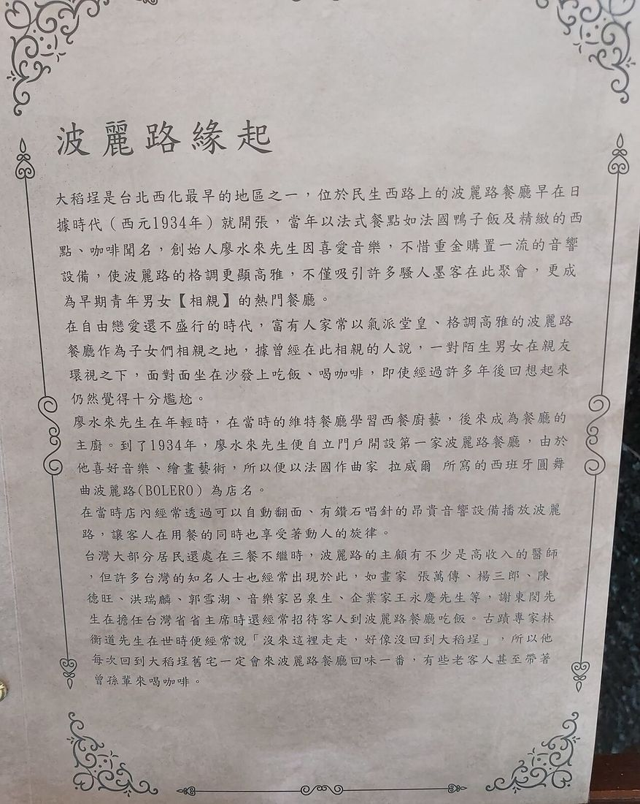
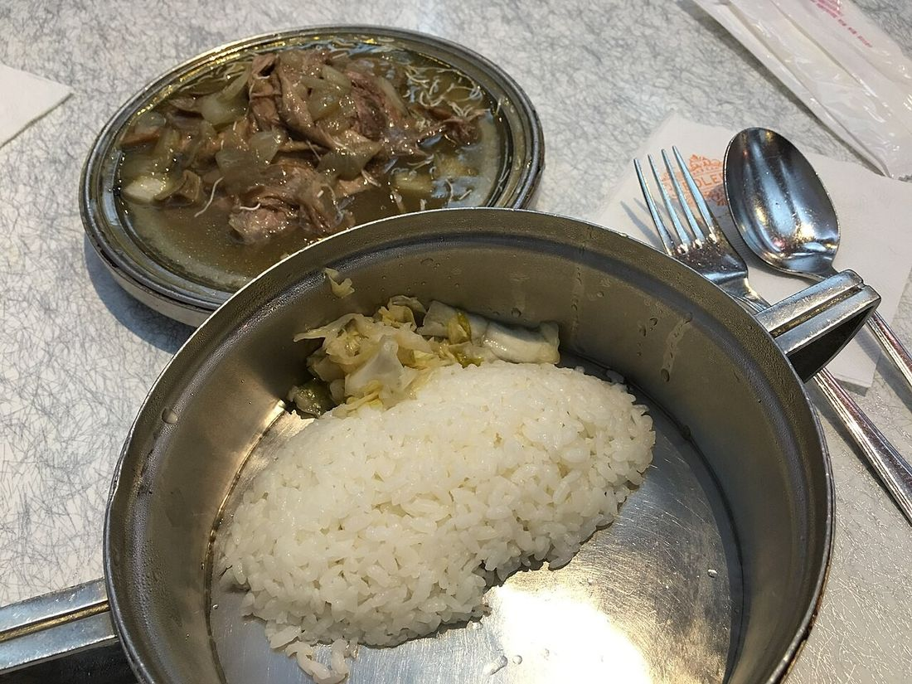

台北老店．大稻埕與城中
波麗路：大稻埕的相親西餐廳
這家餐廳的椅背特別高，據說是因為相親。

大稻埕民生西路上的波麗路，一九三四年開業，到今天九十多年，是很多台北人阿公阿嬤那一輩約會、相親的地方。
從維特咖啡館走出來的主廚
創辦人廖水來，原本在台灣人開的「維特」咖啡館當主廚。自己開店時，用他喜歡的名曲〈波麗露〉當店名。
78 轉電唱機和畫家們
當年店裡用七十八轉的自動電唱機播古典音樂。畫家楊三郎、郭雪湖、音樂家呂泉生都常來。
一份鴨子飯，等於公務員月薪的十二分之一
一九六一年，公務員月薪大約三百元，一份法國鴨子飯要二十五元。
相親與加高的椅背
那個年代，很多人家約在這裡相親。據說有一對隔著椅子認識的客人後來結婚了，店家乾脆把椅背全部加高。
專業點：飯後咖啡怎麼選
中焙講究酸苦平衡、口感圓潤；深焙苦韻明顯、尾韻厚實。吃完一份濃郁的西餐，可以問問店裡的咖啡是哪一種焙度。
現在由第三代接手，老菜色都還在。
老照片與街景



店家資訊
- 店家
- 波麗路西餐廳
- 地點
- 台北市大同區民生西路 314 號
- 現況
- 營業中
- 營業時間
- 常有變動，出發前請再確認
- IG 影片
- 12/4 上片
你家長輩有沒有在波麗路相親或約會的故事？留言說給我們聽
到 IG 留言告訴我們
到 IG 留言告訴我們